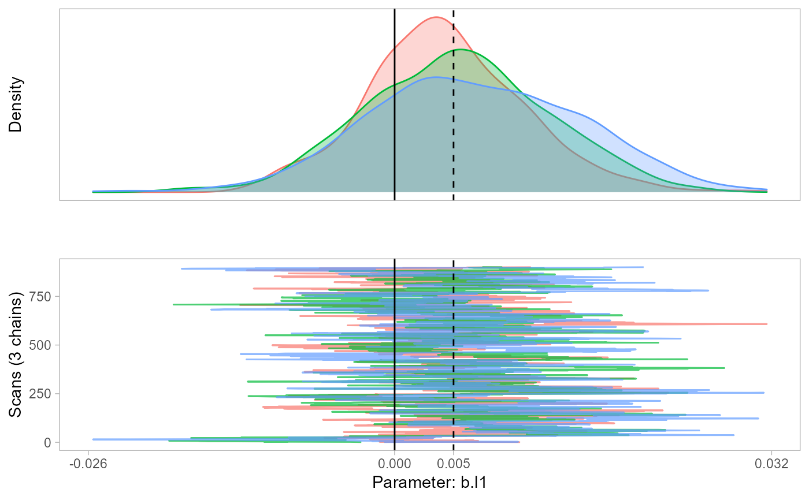

R/rmm.R
rmm.RdThe rmm package provides an interface to fit Bayesian multiple membership multilevel models with endogenized weights using JAGS.
rmm( formula, family = "Gaussian", priors = NULL, inits = NULL, iter = 1000, burnin = 100, chains = 3, seed = NULL, run = T, parallel = F, monitor = T, hdi = F, r = 4, transform = "center", modelfile = F, data = NULL )
| formula | A symbolic description of the model in form of an R formula. More details below. |
|---|---|
| family | Character vector. Currently supported are "Gaussian", "Logit", "Condlogit", "Weibull", or "Cox". |
| priors | A list with parameter names as tags and their prior specification as values. More details below. |
| inits | A list with parameter as tags and their initial values as values. This list will be used in all chains. If NULL, JAGS and rmm select appropriate inits. |
| iter | Total number of iterations. |
| burnin | Number of iterations that will be discarded . |
| chains | Number of chains. |
| seed | A random number. |
| run | A logical value (True or False) indicating whether JAGS should estimate the model. |
| monitor | A logical value (True or False). If |
| hdi | Numeric or False. If confidence level |
| r | Numeric. Rounding value. Default is 3. |
| transform | Character vector or FALSE. Specifying |
| modelfile | Character vector or TRUE|False. If TRUE, the JAGS model is saved in rmm/temp/modelstring.txt. If a file path is supplied as string, rmm will just create the data structure and use the provided modelfile. |
| data | Dataframe object. The dataset must have level 1 as unit of analysis. More details below. |
A list with 7 elements: reg.table, w, re.l1, re.l3, pred, input, jags.out. If monitor=F, only the regression table is returned. If monitor=T, the predicted weights, level-1 random effects (if specified in the model), level-3 random effects (if specified in the model), predicted values of the dependent variable, and the internally created variables are returned. The last element of the list is the unformatted Jags output.
The main function of rmm is rmm, which uses formula syntax to specify a multiple membership
multilevel model with endogenized weights. Based on the supplied formulas, data, and additional information,
it writes code to fit the model in JAGS. Subsequently, the JAGS output is processed to ease the
interpretation of the model results.
In order to fit the models, JAGS must be installed.
The package rmm estimates models with a complex nonstandard multilevel structure, known
as multiple membership multilevel structure. The difference of this package to other packages and programs
to estimate multiple membership multilevel models, such as brms or MLwiN,
is that rmm allows to endogenize the membership weights with a weight function. In doing so, rmm allows
to examine the process by which the effects of lower-level units aggregate to a higher level (micro-macro link).
Accessible introductions to multiple membership models are given by the report by Fielding and Goldstein (2006) and the book chapter by Beretvas (2010). More advanced treatments of multiple membership models are provided in the multilevel textbook by Goldstein (2011, Chapter 13), the book chapters on multiple membership models by Rasbash and Browne (2001, 2008), the paper by Browne et al. (2001), and the report by Leckie (2013).
General formula structure
Y ~ 1 + mm(id(l1id, l2id), mmc(X.L1), mmw(w ~ 1 / offset(N), constraint=1)) + X.L2 + X.L3 + hm(id=l3id, name=l3name, type=FE, showFE=F)
Dependent variable: Y
Multiple membership object: mm() to analyze how the effects of level-1 predictors from multiple constituting members aggregate to level 2
Level-2 predictors: X.L2, being something like X1 + ... + XN
Level-3 predictors: X.L3, being something like X1 + ... + XN
Hierarchical membership object: hm() to recognize that level 2 units embedded in a third level
Currently supported dependent variables / link functions
Gaussian continuous variable Y
Binomial outcome for logistic regression Y
Conditional logistic outcomes ???
Weibull survival time: Surv(survivaltime, event) or Surv(survivaltime, event, upperlimit) (where upperlimit is the upper limit for predictions(!))
Cox survival time: Surv(survivaltime, event)
Vector of level-2 predictors
An intercept at the main level 2 is added whether or not a 1 is specified in the beginning. Interaction terms have to be included as separate variables.
Multiple membership object mm()
id() to indicate level-1 and level-2 ids
mmc() to specify level-1 predictors. No intercept allowed. Interaction terms have to be included as separate variables.
mmw() to specify the weight function (micro-macro link). The function can be nonlinear and contain variables but needs to be identifiable.
To give a few examples: w ~ 1/offset(N) specifies mean-aggregation, with N being a variables that indicates the number of level-1 units per level-2 entity.
If no mmw() is specified, w ~ 1/offset(N) is assumed. In Rosche (2021), I propose to use w ~ 1/offset(N)^exp(-(X.W)) as the general form for weight functions.
This function ensures that weights are limited by 0 and 1. Specifying variables as offset(X.W) will not estimate a parameter for this variable.
Two different identification restrictions are provided:
mmw(w ~ ..., constraint=1): constraint=1 restricts the weights to sum to 1 for each level-2 entity. (default)
mmw(w ~ ..., constraint=2): constraint=2 restricts the weights to sum to the total number of level-2 entities over the whole dataset, allowing some level-2 entities to have weights smaller/larger than 1.
mmw(w ~ ..., ar=TRUE): Allows random effects of level-1 units to change across memberships in level-2 entities.
mmw(w ~ ..., ar=FALSE): Assumes all level-1 units to have one random effect
Hierachical membership object hm()
id=l3id to indicate level-3 id
name=l3name to specify value labels for level 3 units.
type=RE (default) or type=FE to choose between random- or fixed effect estimation.
If RE is chosen, level 3 predictors can be added. If FE is chosen, each level 3 unit has its own intercept and level 3 predictors are removed.
If showFE=TRUE the fixed effects are reported, otherwise omitted (default). The first l3id is the base.
More details on changing priors
Priors of the following parameters may be changed: b.l1, b.l2, b.l3, b.w, tau.l1, tau.l2, tau.l3.
The priors are specified as a list with parameter names as tags and their prior specification as values:
priors=list("b.l1"="dnorm(0,0.01)"). In this example, the priors of all level-1 regression coefficients
are changed to a more informative prior that has a smaller variance than the default (dnorm(0,0.0001)).
I refer to the JAGS manual
for more details on possible prior specifications.
More details on the weight function
...
More details on constructing the data
...
Tips
Error in update.jags(model, n.iter, ...) : Error in node w[1285] Invalid parent values The weight function must be designed such that the distribution of weights is in
line with the priors for all other parameters. This error could, for instance, be caused if weights can be negative but negative weights cause the distribution of other parameters to be outside of the distribution of their priors.
Carefully designing the weight function so that it is properly bounded may therefore help. Specifying transform="std" may help as well.
Including weight regressors demands a lot from your data It is therefore a good idea to start with slightly more informative priors.
I suggest starting with priors = list("b.w"="dnorm(0,0.1)" and then increasing the variance step by step.
...
Rosche, Benjamin (2021): On the multilevel structure of coalition governments
Benjamin Rosche <benjamin.rosche@gmail.com>
data(coalgov) m1 <- rmm(Surv(govdur, earlyterm, govmaxdur) ~ 1 + mm(id(pid, gid), mmc(fdep), mmw(w ~ 1/offset(n), constraint=1)) + majority + hm(id=cid, name=cname, type=RE, showFE=F), family="Weibull", monitor=T, data=coalgov)#> Compiling model graph #> Resolving undeclared variables #> Allocating nodes #> Graph information: #> Observed stochastic nodes: 983 #> Unobserved stochastic nodes: 843 #> Total graph size: 14994 #> #> Initializing model #>m1$reg.table # the regression output#> variable coefficients sd lb ub ppp #> b.l1 fdep 0.0055 0.0079 -0.0092 0.0215 0.2430 #> b.l2[1] X0 -5.2388 1.9354 -7.8479 -2.1791 0.0000 #> b.l2[2] majority -0.4047 0.1632 -0.7456 -0.0962 0.0022 #> shape shape 1.1382 0.0733 0.9984 1.2677 NA #> sigma.l1 sigma.l1 0.3524 0.2176 0.0590 0.8386 NA #> sigma.l2 sigma.l2 1.1318 0.0743 1.0119 1.2847 NA #> sigma.l3 sigma.l3 2.5029 2.1354 0.2388 6.7279 NA #> DIC DIC 2569.5718 NA NA NA NAm1$w # the estimated weights#> W1 W2 W3 W4 W5 W6 W7 W8 W9 #> L2 unit 1 0.5000 0.5000 NA NA NA NA NA NA NA #> L2 unit 2 0.5000 0.5000 NA NA NA NA NA NA NA #> L2 unit 3 0.5000 0.5000 NA NA NA NA NA NA NA #> L2 unit 4 0.3333 0.3333 0.3333 NA NA NA NA NA NA #> L2 unit 5 0.3333 0.3333 0.3333 NA NA NA NA NA NA #> L2 unit 6 0.5000 0.5000 NA NA NA NA NA NA NA #> L2 unit 7 0.2500 0.2500 0.2500 0.2500 NA NA NA NA NA #> L2 unit 8 0.2500 0.2500 0.2500 0.2500 NA NA NA NA NA #> L2 unit 9 0.2500 0.2500 0.2500 0.2500 NA NA NA NA NA #> L2 unit 10 0.5000 0.5000 NA NA NA NA NA NA NA #> L2 unit 11 0.2500 0.2500 0.2500 0.2500 NA NA NA NA NA #> L2 unit 12 0.2500 0.2500 0.2500 0.2500 NA NA NA NA NA #> L2 unit 13 0.2500 0.2500 0.2500 0.2500 NA NA NA NA NA #> L2 unit 14 0.3333 0.3333 0.3333 NA NA NA NA NA NA #> L2 unit 15 0.3333 0.3333 0.3333 NA NA NA NA NA NA #> L2 unit 16 0.3333 0.3333 0.3333 NA NA NA NA NA NA #> L2 unit 17 0.3333 0.3333 0.3333 NA NA NA NA NA NA #> L2 unit 18 0.3333 0.3333 0.3333 NA NA NA NA NA NA #> L2 unit 19 0.3333 0.3333 0.3333 NA NA NA NA NA NA #> L2 unit 20 0.3333 0.3333 0.3333 NA NA NA NA NA NA #> L2 unit 21 0.3333 0.3333 0.3333 NA NA NA NA NA NA #> L2 unit 22 0.2500 0.2500 0.2500 0.2500 NA NA NA NA NA #> L2 unit 23 0.5000 0.5000 NA NA NA NA NA NA NA #> L2 unit 24 0.5000 0.5000 NA NA NA NA NA NA NA #> L2 unit 25 0.5000 0.5000 NA NA NA NA NA NA NA #> L2 unit 26 0.5000 0.5000 NA NA NA NA NA NA NA #> L2 unit 27 0.5000 0.5000 NA NA NA NA NA NA NA #> L2 unit 28 0.3333 0.3333 0.3333 NA NA NA NA NA NA #> L2 unit 29 0.3333 0.3333 0.3333 NA NA NA NA NA NA #> L2 unit 30 0.5000 0.5000 NA NA NA NA NA NA NA #> L2 unit 31 0.5000 0.5000 NA NA NA NA NA NA NA #> L2 unit 32 0.3333 0.3333 0.3333 NA NA NA NA NA NA #> L2 unit 33 0.5000 0.5000 NA NA NA NA NA NA NA #> L2 unit 34 0.3333 0.3333 0.3333 NA NA NA NA NA NA #> L2 unit 35 0.2000 0.2000 0.2000 0.2000 0.2000 NA NA NA NA #> L2 unit 36 0.5000 0.5000 NA NA NA NA NA NA NA #> L2 unit 37 0.2500 0.2500 0.2500 0.2500 NA NA NA NA NA #> L2 unit 38 0.2500 0.2500 0.2500 0.2500 NA NA NA NA NA #> L2 unit 39 0.2500 0.2500 0.2500 0.2500 NA NA NA NA NA #> L2 unit 40 0.3333 0.3333 0.3333 NA NA NA NA NA NA #> L2 unit 41 0.5000 0.5000 NA NA NA NA NA NA NA #> L2 unit 42 0.2500 0.2500 0.2500 0.2500 NA NA NA NA NA #> L2 unit 43 0.3333 0.3333 0.3333 NA NA NA NA NA NA #> L2 unit 44 0.5000 0.5000 NA NA NA NA NA NA NA #> L2 unit 45 0.5000 0.5000 NA NA NA NA NA NA NA #> L2 unit 46 0.5000 0.5000 NA NA NA NA NA NA NA #> L2 unit 47 0.5000 0.5000 NA NA NA NA NA NA NA #> L2 unit 48 0.5000 0.5000 NA NA NA NA NA NA NA #> L2 unit 49 0.5000 0.5000 NA NA NA NA NA NA NA #> L2 unit 50 0.3333 0.3333 0.3333 NA NA NA NA NA NA #> L2 unit 51 0.5000 0.5000 NA NA NA NA NA NA NA #> L2 unit 52 0.3333 0.3333 0.3333 NA NA NA NA NA NA #> L2 unit 53 0.5000 0.5000 NA NA NA NA NA NA NA #> L2 unit 54 0.5000 0.5000 NA NA NA NA NA NA NA #> L2 unit 55 0.5000 0.5000 NA NA NA NA NA NA NA #> L2 unit 56 0.5000 0.5000 NA NA NA NA NA NA NA #> L2 unit 57 0.5000 0.5000 NA NA NA NA NA NA NA #> L2 unit 58 0.5000 0.5000 NA NA NA NA NA NA NA #> L2 unit 59 0.5000 0.5000 NA NA NA NA NA NA NA #> L2 unit 60 0.5000 0.5000 NA NA NA NA NA NA NA #> L2 unit 61 0.5000 0.5000 NA NA NA NA NA NA NA #> L2 unit 62 0.5000 0.5000 NA NA NA NA NA NA NA #> L2 unit 63 0.5000 0.5000 NA NA NA NA NA NA NA #> L2 unit 64 0.5000 0.5000 NA NA NA NA NA NA NA #> L2 unit 65 0.5000 0.5000 NA NA NA NA NA NA NA #> L2 unit 66 0.5000 0.5000 NA NA NA NA NA NA NA #> L2 unit 67 0.3333 0.3333 0.3333 NA NA NA NA NA NA #> L2 unit 68 0.2500 0.2500 0.2500 0.2500 NA NA NA NA NA #> L2 unit 69 0.2500 0.2500 0.2500 0.2500 NA NA NA NA NA #> L2 unit 70 0.2000 0.2000 0.2000 0.2000 0.2000 NA NA NA NA #> L2 unit 71 0.2000 0.2000 0.2000 0.2000 0.2000 NA NA NA NA #> L2 unit 72 0.2000 0.2000 0.2000 0.2000 0.2000 NA NA NA NA #> L2 unit 73 0.2000 0.2000 0.2000 0.2000 0.2000 NA NA NA NA #> L2 unit 74 0.2500 0.2500 0.2500 0.2500 NA NA NA NA NA #> L2 unit 75 0.1667 0.1667 0.1667 0.1667 0.1667 0.1667 NA NA NA #> L2 unit 76 0.2500 0.2500 0.2500 0.2500 NA NA NA NA NA #> L2 unit 77 0.2500 0.2500 0.2500 0.2500 NA NA NA NA NA #> L2 unit 78 0.2500 0.2500 0.2500 0.2500 NA NA NA NA NA #> L2 unit 79 0.2500 0.2500 0.2500 0.2500 NA NA NA NA NA #> L2 unit 80 0.2000 0.2000 0.2000 0.2000 0.2000 NA NA NA NA #> L2 unit 81 0.2500 0.2500 0.2500 0.2500 NA NA NA NA NA #> L2 unit 82 0.2500 0.2500 0.2500 0.2500 NA NA NA NA NA #> L2 unit 83 0.2500 0.2500 0.2500 0.2500 NA NA NA NA NA #> L2 unit 84 0.1667 0.1667 0.1667 0.1667 0.1667 0.1667 NA NA NA #> L2 unit 85 0.2500 0.2500 0.2500 0.2500 NA NA NA NA NA #> L2 unit 86 0.2000 0.2000 0.2000 0.2000 0.2000 NA NA NA NA #> L2 unit 87 0.2000 0.2000 0.2000 0.2000 0.2000 NA NA NA NA #> L2 unit 88 0.2000 0.2000 0.2000 0.2000 0.2000 NA NA NA NA #> L2 unit 89 0.2000 0.2000 0.2000 0.2000 0.2000 NA NA NA NA #> L2 unit 90 0.2000 0.2000 0.2000 0.2000 0.2000 NA NA NA NA #> L2 unit 91 0.1667 0.1667 0.1667 0.1667 0.1667 0.1667 NA NA NA #> L2 unit 92 0.2500 0.2500 0.2500 0.2500 NA NA NA NA NA #> L2 unit 93 0.5000 0.5000 NA NA NA NA NA NA NA #> L2 unit 94 0.2500 0.2500 0.2500 0.2500 NA NA NA NA NA #> L2 unit 95 0.2500 0.2500 0.2500 0.2500 NA NA NA NA NA #> L2 unit 96 0.2500 0.2500 0.2500 0.2500 NA NA NA NA NA #> L2 unit 97 0.2500 0.2500 0.2500 0.2500 NA NA NA NA NA #> L2 unit 98 0.2500 0.2500 0.2500 0.2500 NA NA NA NA NA #> L2 unit 99 0.2500 0.2500 0.2500 0.2500 NA NA NA NA NA #> L2 unit 100 0.3333 0.3333 0.3333 NA NA NA NA NA NA #> L2 unit 101 0.2500 0.2500 0.2500 0.2500 NA NA NA NA NA #> L2 unit 102 0.2000 0.2000 0.2000 0.2000 0.2000 NA NA NA NA #> L2 unit 103 0.2000 0.2000 0.2000 0.2000 0.2000 NA NA NA NA #> L2 unit 104 0.5000 0.5000 NA NA NA NA NA NA NA #> L2 unit 105 0.3333 0.3333 0.3333 NA NA NA NA NA NA #> L2 unit 106 0.5000 0.5000 NA NA NA NA NA NA NA #> L2 unit 107 0.5000 0.5000 NA NA NA NA NA NA NA #> L2 unit 108 0.5000 0.5000 NA NA NA NA NA NA NA #> L2 unit 109 0.3333 0.3333 0.3333 NA NA NA NA NA NA #> L2 unit 110 0.3333 0.3333 0.3333 NA NA NA NA NA NA #> L2 unit 111 0.3333 0.3333 0.3333 NA NA NA NA NA NA #> L2 unit 112 0.3333 0.3333 0.3333 NA NA NA NA NA NA #> L2 unit 113 0.3333 0.3333 0.3333 NA NA NA NA NA NA #> L2 unit 114 0.3333 0.3333 0.3333 NA NA NA NA NA NA #> L2 unit 115 0.5000 0.5000 NA NA NA NA NA NA NA #> L2 unit 116 0.2500 0.2500 0.2500 0.2500 NA NA NA NA NA #> L2 unit 117 0.3333 0.3333 0.3333 NA NA NA NA NA NA #> L2 unit 118 0.3333 0.3333 0.3333 NA NA NA NA NA NA #> L2 unit 119 0.2500 0.2500 0.2500 0.2500 NA NA NA NA NA #> L2 unit 120 0.3333 0.3333 0.3333 NA NA NA NA NA NA #> L2 unit 121 0.2500 0.2500 0.2500 0.2500 NA NA NA NA NA #> L2 unit 122 0.2500 0.2500 0.2500 0.2500 NA NA NA NA NA #> L2 unit 123 0.2500 0.2500 0.2500 0.2500 NA NA NA NA NA #> L2 unit 124 0.2500 0.2500 0.2500 0.2500 NA NA NA NA NA #> L2 unit 125 0.2000 0.2000 0.2000 0.2000 0.2000 NA NA NA NA #> L2 unit 126 0.2000 0.2000 0.2000 0.2000 0.2000 NA NA NA NA #> L2 unit 127 0.2500 0.2500 0.2500 0.2500 NA NA NA NA NA #> L2 unit 128 0.2500 0.2500 0.2500 0.2500 NA NA NA NA NA #> L2 unit 129 0.2000 0.2000 0.2000 0.2000 0.2000 NA NA NA NA #> L2 unit 130 0.2000 0.2000 0.2000 0.2000 0.2000 NA NA NA NA #> L2 unit 131 0.2500 0.2500 0.2500 0.2500 NA NA NA NA NA #> L2 unit 132 0.2500 0.2500 0.2500 0.2500 NA NA NA NA NA #> L2 unit 133 0.2500 0.2500 0.2500 0.2500 NA NA NA NA NA #> L2 unit 134 0.2500 0.2500 0.2500 0.2500 NA NA NA NA NA #> L2 unit 135 0.2500 0.2500 0.2500 0.2500 NA NA NA NA NA #> L2 unit 136 0.2500 0.2500 0.2500 0.2500 NA NA NA NA NA #> L2 unit 137 0.2500 0.2500 0.2500 0.2500 NA NA NA NA NA #> L2 unit 138 0.3333 0.3333 0.3333 NA NA NA NA NA NA #> L2 unit 139 0.3333 0.3333 0.3333 NA NA NA NA NA NA #> L2 unit 140 0.2000 0.2000 0.2000 0.2000 0.2000 NA NA NA NA #> L2 unit 141 0.2500 0.2500 0.2500 0.2500 NA NA NA NA NA #> L2 unit 142 0.2000 0.2000 0.2000 0.2000 0.2000 NA NA NA NA #> L2 unit 143 0.2500 0.2500 0.2500 0.2500 NA NA NA NA NA #> L2 unit 144 0.3333 0.3333 0.3333 NA NA NA NA NA NA #> L2 unit 145 0.5000 0.5000 NA NA NA NA NA NA NA #> L2 unit 146 0.5000 0.5000 NA NA NA NA NA NA NA #> L2 unit 147 0.5000 0.5000 NA NA NA NA NA NA NA #> L2 unit 148 0.5000 0.5000 NA NA NA NA NA NA NA #> L2 unit 149 0.5000 0.5000 NA NA NA NA NA NA NA #> L2 unit 150 0.3333 0.3333 0.3333 NA NA NA NA NA NA #> L2 unit 151 0.3333 0.3333 0.3333 NA NA NA NA NA NA #> L2 unit 152 0.3333 0.3333 0.3333 NA NA NA NA NA NA #> L2 unit 153 0.3333 0.3333 0.3333 NA NA NA NA NA NA #> L2 unit 154 0.2500 0.2500 0.2500 0.2500 NA NA NA NA NA #> L2 unit 155 0.3333 0.3333 0.3333 NA NA NA NA NA NA #> L2 unit 156 0.3333 0.3333 0.3333 NA NA NA NA NA NA #> L2 unit 157 0.5000 0.5000 NA NA NA NA NA NA NA #> L2 unit 158 0.5000 0.5000 NA NA NA NA NA NA NA #> L2 unit 159 0.5000 0.5000 NA NA NA NA NA NA NA #> L2 unit 160 0.5000 0.5000 NA NA NA NA NA NA NA #> L2 unit 161 0.5000 0.5000 NA NA NA NA NA NA NA #> L2 unit 162 0.5000 0.5000 NA NA NA NA NA NA NA #> L2 unit 163 0.5000 0.5000 NA NA NA NA NA NA NA #> L2 unit 164 0.5000 0.5000 NA NA NA NA NA NA NA #> L2 unit 165 0.2500 0.2500 0.2500 0.2500 NA NA NA NA NA #> L2 unit 166 0.5000 0.5000 NA NA NA NA NA NA NA #> L2 unit 167 0.5000 0.5000 NA NA NA NA NA NA NA #> L2 unit 168 0.5000 0.5000 NA NA NA NA NA NA NA #> L2 unit 169 0.3333 0.3333 0.3333 NA NA NA NA NA NA #> L2 unit 170 0.3333 0.3333 0.3333 NA NA NA NA NA NA #> L2 unit 171 0.5000 0.5000 NA NA NA NA NA NA NA #> L2 unit 172 0.2000 0.2000 0.2000 0.2000 0.2000 NA NA NA NA #> L2 unit 173 0.3333 0.3333 0.3333 NA NA NA NA NA NA #> L2 unit 174 0.5000 0.5000 NA NA NA NA NA NA NA #> L2 unit 175 0.2500 0.2500 0.2500 0.2500 NA NA NA NA NA #> L2 unit 176 0.2500 0.2500 0.2500 0.2500 NA NA NA NA NA #> L2 unit 177 0.3333 0.3333 0.3333 NA NA NA NA NA NA #> L2 unit 178 0.5000 0.5000 NA NA NA NA NA NA NA #> L2 unit 179 0.3333 0.3333 0.3333 NA NA NA NA NA NA #> L2 unit 180 0.3333 0.3333 0.3333 NA NA NA NA NA NA #> L2 unit 181 0.5000 0.5000 NA NA NA NA NA NA NA #> L2 unit 182 0.3333 0.3333 0.3333 NA NA NA NA NA NA #> L2 unit 183 0.2500 0.2500 0.2500 0.2500 NA NA NA NA NA #> L2 unit 184 0.2500 0.2500 0.2500 0.2500 NA NA NA NA NA #> L2 unit 185 0.2500 0.2500 0.2500 0.2500 NA NA NA NA NA #> L2 unit 186 0.3333 0.3333 0.3333 NA NA NA NA NA NA #> L2 unit 187 0.3333 0.3333 0.3333 NA NA NA NA NA NA #> L2 unit 188 0.3333 0.3333 0.3333 NA NA NA NA NA NA #> L2 unit 189 0.5000 0.5000 NA NA NA NA NA NA NA #> L2 unit 190 0.3333 0.3333 0.3333 NA NA NA NA NA NA #> L2 unit 191 0.2500 0.2500 0.2500 0.2500 NA NA NA NA NA #> L2 unit 192 0.3333 0.3333 0.3333 NA NA NA NA NA NA #> L2 unit 193 0.5000 0.5000 NA NA NA NA NA NA NA #> L2 unit 194 0.3333 0.3333 0.3333 NA NA NA NA NA NA #> L2 unit 195 0.3333 0.3333 0.3333 NA NA NA NA NA NA #> L2 unit 196 0.2500 0.2500 0.2500 0.2500 NA NA NA NA NA #> L2 unit 197 0.2000 0.2000 0.2000 0.2000 0.2000 NA NA NA NA #> L2 unit 198 0.2000 0.2000 0.2000 0.2000 0.2000 NA NA NA NA #> L2 unit 199 0.2500 0.2500 0.2500 0.2500 NA NA NA NA NA #> L2 unit 200 0.2000 0.2000 0.2000 0.2000 0.2000 NA NA NA NA #> L2 unit 201 0.2000 0.2000 0.2000 0.2000 0.2000 NA NA NA NA #> L2 unit 202 0.2000 0.2000 0.2000 0.2000 0.2000 NA NA NA NA #> L2 unit 203 0.2000 0.2000 0.2000 0.2000 0.2000 NA NA NA NA #> L2 unit 204 0.2000 0.2000 0.2000 0.2000 0.2000 NA NA NA NA #> L2 unit 205 0.2500 0.2500 0.2500 0.2500 NA NA NA NA NA #> L2 unit 206 0.2500 0.2500 0.2500 0.2500 NA NA NA NA NA #> L2 unit 207 0.2500 0.2500 0.2500 0.2500 NA NA NA NA NA #> L2 unit 208 0.1667 0.1667 0.1667 0.1667 0.1667 0.1667 NA NA NA #> L2 unit 209 0.1250 0.1250 0.1250 0.1250 0.1250 0.1250 0.1250 0.1250 NA #> L2 unit 210 0.2000 0.2000 0.2000 0.2000 0.2000 NA NA NA NA #> L2 unit 211 0.1667 0.1667 0.1667 0.1667 0.1667 0.1667 NA NA NA #> L2 unit 212 0.1667 0.1667 0.1667 0.1667 0.1667 0.1667 NA NA NA #> L2 unit 213 0.2500 0.2500 0.2500 0.2500 NA NA NA NA NA #> L2 unit 214 0.1667 0.1667 0.1667 0.1667 0.1667 0.1667 NA NA NA #> L2 unit 215 0.1250 0.1250 0.1250 0.1250 0.1250 0.1250 0.1250 0.1250 NA #> L2 unit 216 0.2500 0.2500 0.2500 0.2500 NA NA NA NA NA #> L2 unit 217 0.2500 0.2500 0.2500 0.2500 NA NA NA NA NA #> L2 unit 218 0.3333 0.3333 0.3333 NA NA NA NA NA NA #> L2 unit 219 0.3333 0.3333 0.3333 NA NA NA NA NA NA #> L2 unit 220 0.3333 0.3333 0.3333 NA NA NA NA NA NA #> L2 unit 221 0.2500 0.2500 0.2500 0.2500 NA NA NA NA NA #> L2 unit 222 0.5000 0.5000 NA NA NA NA NA NA NA #> L2 unit 223 0.5000 0.5000 NA NA NA NA NA NA NA #> L2 unit 224 0.5000 0.5000 NA NA NA NA NA NA NA #> L2 unit 225 0.5000 0.5000 NA NA NA NA NA NA NA #> L2 unit 226 0.5000 0.5000 NA NA NA NA NA NA NA #> L2 unit 227 0.3333 0.3333 0.3333 NA NA NA NA NA NA #> L2 unit 228 0.2500 0.2500 0.2500 0.2500 NA NA NA NA NA #> L2 unit 229 0.3333 0.3333 0.3333 NA NA NA NA NA NA #> L2 unit 230 0.3333 0.3333 0.3333 NA NA NA NA NA NA #> L2 unit 231 0.5000 0.5000 NA NA NA NA NA NA NA #> L2 unit 232 0.5000 0.5000 NA NA NA NA NA NA NA #> L2 unit 233 0.5000 0.5000 NA NA NA NA NA NA NA #> L2 unit 234 0.5000 0.5000 NA NA NA NA NA NA NA #> L2 unit 235 0.5000 0.5000 NA NA NA NA NA NA NA #> L2 unit 236 0.5000 0.5000 NA NA NA NA NA NA NA #> L2 unit 237 0.5000 0.5000 NA NA NA NA NA NA NA #> L2 unit 238 0.5000 0.5000 NA NA NA NA NA NA NA #> L2 unit 239 0.5000 0.5000 NA NA NA NA NA NA NA #> L2 unit 240 0.5000 0.5000 NA NA NA NA NA NA NA #> L2 unit 241 0.5000 0.5000 NA NA NA NA NA NA NA #> L2 unit 242 0.5000 0.5000 NA NA NA NA NA NA NA #> L2 unit 243 0.5000 0.5000 NA NA NA NA NA NA NA #> L2 unit 244 0.5000 0.5000 NA NA NA NA NA NA NA #> L2 unit 245 0.5000 0.5000 NA NA NA NA NA NA NA #> L2 unit 246 0.5000 0.5000 NA NA NA NA NA NA NA #> L2 unit 247 0.5000 0.5000 NA NA NA NA NA NA NA #> L2 unit 248 0.5000 0.5000 NA NA NA NA NA NA NA #> L2 unit 249 0.5000 0.5000 NA NA NA NA NA NA NA #> L2 unit 250 0.5000 0.5000 NA NA NA NA NA NA NA #> L2 unit 251 0.5000 0.5000 NA NA NA NA NA NA NA #> L2 unit 252 0.5000 0.5000 NA NA NA NA NA NA NA #> L2 unit 253 0.3333 0.3333 0.3333 NA NA NA NA NA NA #> L2 unit 254 0.5000 0.5000 NA NA NA NA NA NA NA #> L2 unit 255 0.5000 0.5000 NA NA NA NA NA NA NA #> L2 unit 256 0.5000 0.5000 NA NA NA NA NA NA NA #> L2 unit 257 0.5000 0.5000 NA NA NA NA NA NA NA #> L2 unit 258 0.5000 0.5000 NA NA NA NA NA NA NA #> L2 unit 259 0.5000 0.5000 NA NA NA NA NA NA NA #> L2 unit 260 0.5000 0.5000 NA NA NA NA NA NA NA #> L2 unit 261 0.5000 0.5000 NA NA NA NA NA NA NA #> L2 unit 262 0.5000 0.5000 NA NA NA NA NA NA NA #> L2 unit 263 0.5000 0.5000 NA NA NA NA NA NA NA #> L2 unit 264 0.5000 0.5000 NA NA NA NA NA NA NA #> L2 unit 265 0.5000 0.5000 NA NA NA NA NA NA NA #> L2 unit 266 0.5000 0.5000 NA NA NA NA NA NA NA #> L2 unit 267 0.5000 0.5000 NA NA NA NA NA NA NA #> L2 unit 268 0.5000 0.5000 NA NA NA NA NA NA NA #> L2 unit 269 0.5000 0.5000 NA NA NA NA NA NA NA #> L2 unit 270 0.5000 0.5000 NA NA NA NA NA NA NA #> L2 unit 271 0.5000 0.5000 NA NA NA NA NA NA NA #> L2 unit 272 0.5000 0.5000 NA NA NA NA NA NA NA #> L2 unit 273 0.5000 0.5000 NA NA NA NA NA NA NA #> L2 unit 274 0.5000 0.5000 NA NA NA NA NA NA NA #> L2 unit 275 0.5000 0.5000 NA NA NA NA NA NA NA #> L2 unit 276 0.2500 0.2500 0.2500 0.2500 NA NA NA NA NA #> L2 unit 277 0.3333 0.3333 0.3333 NA NA NA NA NA NA #> L2 unit 278 0.5000 0.5000 NA NA NA NA NA NA NA #> L2 unit 279 0.5000 0.5000 NA NA NA NA NA NA NA #> L2 unit 280 0.5000 0.5000 NA NA NA NA NA NA NA #> L2 unit 281 0.5000 0.5000 NA NA NA NA NA NA NA #> L2 unit 282 0.5000 0.5000 NA NA NA NA NA NA NA #> L2 unit 283 0.5000 0.5000 NA NA NA NA NA NA NA #> L2 unit 284 0.3333 0.3333 0.3333 NA NA NA NA NA NA #> L2 unit 285 0.5000 0.5000 NA NA NA NA NA NA NA #> L2 unit 286 0.5000 0.5000 NA NA NA NA NA NA NA #> L2 unit 287 0.3333 0.3333 0.3333 NA NA NA NA NA NA #> L2 unit 288 0.3333 0.3333 0.3333 NA NA NA NA NA NA #> L2 unit 289 0.5000 0.5000 NA NA NA NA NA NA NA #> L2 unit 290 0.5000 0.5000 NA NA NA NA NA NA NA #> L2 unit 291 0.5000 0.5000 NA NA NA NA NA NA NA #> L2 unit 292 0.5000 0.5000 NA NA NA NA NA NA NA #> L2 unit 293 0.5000 0.5000 NA NA NA NA NA NA NA #> L2 unit 294 0.5000 0.5000 NA NA NA NA NA NA NA #> L2 unit 295 0.5000 0.5000 NA NA NA NA NA NA NA #> L2 unit 296 0.5000 0.5000 NA NA NA NA NA NA NA #> L2 unit 297 0.5000 0.5000 NA NA NA NA NA NA NA #> L2 unit 298 0.5000 0.5000 NA NA NA NA NA NA NA #> L2 unit 299 0.5000 0.5000 NA NA NA NA NA NA NA #> L2 unit 300 0.5000 0.5000 NA NA NA NA NA NA NA #> L2 unit 301 0.5000 0.5000 NA NA NA NA NA NA NA #> L2 unit 302 0.5000 0.5000 NA NA NA NA NA NA NA #> L2 unit 303 0.5000 0.5000 NA NA NA NA NA NA NA #> L2 unit 304 0.5000 0.5000 NA NA NA NA NA NA NA #> L2 unit 305 0.5000 0.5000 NA NA NA NA NA NA NA #> L2 unit 306 0.5000 0.5000 NA NA NA NA NA NA NA #> L2 unit 307 0.5000 0.5000 NA NA NA NA NA NA NA #> L2 unit 308 0.5000 0.5000 NA NA NA NA NA NA NA #> L2 unit 309 0.5000 0.5000 NA NA NA NA NA NA NA #> L2 unit 310 0.5000 0.5000 NA NA NA NA NA NA NA #> L2 unit 311 0.5000 0.5000 NA NA NA NA NA NA NA #> L2 unit 312 0.5000 0.5000 NA NA NA NA NA NA NA #> L2 unit 313 0.5000 0.5000 NA NA NA NA NA NA NA #> L2 unit 314 0.5000 0.5000 NA NA NA NA NA NA NA #> L2 unit 315 0.2500 0.2500 0.2500 0.2500 NA NA NA NA NA #> L2 unit 316 0.2500 0.2500 0.2500 0.2500 NA NA NA NA NA #> L2 unit 317 0.3333 0.3333 0.3333 NA NA NA NA NA NA #> L2 unit 318 0.2500 0.2500 0.2500 0.2500 NA NA NA NA NA #> L2 unit 319 0.3333 0.3333 0.3333 NA NA NA NA NA NA #> L2 unit 320 0.3333 0.3333 0.3333 NA NA NA NA NA NA #> L2 unit 321 0.3333 0.3333 0.3333 NA NA NA NA NA NA #> L2 unit 322 0.2500 0.2500 0.2500 0.2500 NA NA NA NA NA #> L2 unit 323 0.1667 0.1667 0.1667 0.1667 0.1667 0.1667 NA NA NA #> L2 unit 324 0.1667 0.1667 0.1667 0.1667 0.1667 0.1667 NA NA NA #> L2 unit 325 0.2500 0.2500 0.2500 0.2500 NA NA NA NA NA #> L2 unit 326 0.2500 0.2500 0.2500 0.2500 NA NA NA NA NA #> L2 unit 327 0.3333 0.3333 0.3333 NA NA NA NA NA NA #> L2 unit 328 0.3333 0.3333 0.3333 NA NA NA NA NA NA #> L2 unit 329 0.3333 0.3333 0.3333 NA NA NA NA NA NA #> L2 unit 330 0.3333 0.3333 0.3333 NA NA NA NA NA NA #> L2 unit 331 0.2500 0.2500 0.2500 0.2500 NA NA NA NA NA #> L2 unit 332 0.2000 0.2000 0.2000 0.2000 0.2000 NA NA NA NA #> L2 unit 333 0.2000 0.2000 0.2000 0.2000 0.2000 NA NA NA NA #> L2 unit 334 0.2000 0.2000 0.2000 0.2000 0.2000 NA NA NA NA #> L2 unit 335 0.1111 0.1111 0.1111 0.1111 0.1111 0.1111 0.1111 0.1111 0.1111 #> L2 unit 336 0.1111 0.1111 0.1111 0.1111 0.1111 0.1111 0.1111 0.1111 0.1111 #> L2 unit 337 0.2500 0.2500 0.2500 0.2500 NA NA NA NA NA #> L2 unit 338 0.1429 0.1429 0.1429 0.1429 0.1429 0.1429 0.1429 NA NA #> L2 unit 339 0.1250 0.1250 0.1250 0.1250 0.1250 0.1250 0.1250 0.1250 NA #> L2 unit 340 0.1429 0.1429 0.1429 0.1429 0.1429 0.1429 0.1429 NA NA #> L2 unit 341 0.2000 0.2000 0.2000 0.2000 0.2000 NA NA NA NA #> L2 unit 342 0.2000 0.2000 0.2000 0.2000 0.2000 NA NA NA NA #> L2 unit 343 0.2500 0.2500 0.2500 0.2500 NA NA NA NA NA #> L2 unit 344 0.2500 0.2500 0.2500 0.2500 NA NA NA NA NA #> L2 unit 345 0.2500 0.2500 0.2500 0.2500 NA NA NA NA NA #> L2 unit 346 0.1429 0.1429 0.1429 0.1429 0.1429 0.1429 0.1429 NA NA #> L2 unit 347 0.1429 0.1429 0.1429 0.1429 0.1429 0.1429 0.1429 NA NA #> L2 unit 348 0.2000 0.2000 0.2000 0.2000 0.2000 NA NA NA NA #> L2 unit 349 0.5000 0.5000 NA NA NA NA NA NA NA #> L2 unit 350 0.5000 0.5000 NA NA NA NA NA NA NA #> L2 unit 351 0.1429 0.1429 0.1429 0.1429 0.1429 0.1429 0.1429 NA NA #> L2 unit 352 0.1111 0.1111 0.1111 0.1111 0.1111 0.1111 0.1111 0.1111 0.1111 #> L2 unit 353 0.1250 0.1250 0.1250 0.1250 0.1250 0.1250 0.1250 0.1250 NA #> L2 unit 354 0.1667 0.1667 0.1667 0.1667 0.1667 0.1667 NA NA NA #> L2 unit 355 0.1429 0.1429 0.1429 0.1429 0.1429 0.1429 0.1429 NA NA #> L2 unit 356 0.1667 0.1667 0.1667 0.1667 0.1667 0.1667 NA NA NA #> L2 unit 357 0.2000 0.2000 0.2000 0.2000 0.2000 NA NA NA NA #> L2 unit 358 0.3333 0.3333 0.3333 NA NA NA NA NA NA #> L2 unit 359 0.5000 0.5000 NA NA NA NA NA NA NA #> L2 unit 360 0.3333 0.3333 0.3333 NA NA NA NA NA NA #> L2 unit 361 0.5000 0.5000 NA NA NA NA NA NA NA #> L2 unit 362 0.5000 0.5000 NA NA NA NA NA NA NA #> L2 unit 363 0.2500 0.2500 0.2500 0.2500 NA NA NA NA NA #> L2 unit 364 0.2500 0.2500 0.2500 0.2500 NA NA NA NA NA #> L2 unit 365 0.2500 0.2500 0.2500 0.2500 NA NA NA NA NA #> L2 unit 366 0.2500 0.2500 0.2500 0.2500 NA NA NA NA NA #> L2 unit 367 0.5000 0.5000 NA NA NA NA NA NA NA #> L2 unit 368 0.5000 0.5000 NA NA NA NA NA NA NA #> L2 unit 369 0.2500 0.2500 0.2500 0.2500 NA NA NA NA NA #> L2 unit 370 0.2500 0.2500 0.2500 0.2500 NA NA NA NA NA #> L2 unit 371 0.3333 0.3333 0.3333 NA NA NA NA NA NA #> L2 unit 372 0.3333 0.3333 0.3333 NA NA NA NA NA NA #> L2 unit 373 0.5000 0.5000 NA NA NA NA NA NA NA #> L2 unit 374 0.5000 0.5000 NA NA NA NA NA NA NA #> L2 unit 375 0.5000 0.5000 NA NA NA NA NA NA NA #> L2 unit 376 0.3333 0.3333 0.3333 NA NA NA NA NA NA #> L2 unit 377 0.3333 0.3333 0.3333 NA NA NA NA NA NA #> L2 unit 378 0.5000 0.5000 NA NA NA NA NA NA NA #> L2 unit 379 0.3333 0.3333 0.3333 NA NA NA NA NA NA #> L2 unit 380 0.3333 0.3333 0.3333 NA NA NA NA NA NA #> L2 unit 381 0.3333 0.3333 0.3333 NA NA NA NA NA NA #> L2 unit 382 0.5000 0.5000 NA NA NA NA NA NA NA #> L2 unit 383 0.3333 0.3333 0.3333 NA NA NA NA NA NA #> L2 unit 384 0.5000 0.5000 NA NA NA NA NA NA NA #> L2 unit 385 0.5000 0.5000 NA NA NA NA NA NA NA #> L2 unit 386 0.5000 0.5000 NA NA NA NA NA NA NA #> L2 unit 387 0.5000 0.5000 NA NA NA NA NA NA NA #> L2 unit 388 0.2000 0.2000 0.2000 0.2000 0.2000 NA NA NA NA #> L2 unit 389 0.3333 0.3333 0.3333 NA NA NA NA NA NA #> L2 unit 390 0.2000 0.2000 0.2000 0.2000 0.2000 NA NA NA NA #> L2 unit 391 0.2000 0.2000 0.2000 0.2000 0.2000 NA NA NA NA #> L2 unit 392 0.5000 0.5000 NA NA NA NA NA NA NA #> L2 unit 393 0.5000 0.5000 NA NA NA NA NA NA NA #> L2 unit 394 0.5000 0.5000 NA NA NA NA NA NA NA #> L2 unit 395 0.5000 0.5000 NA NA NA NA NA NA NA #> L2 unit 396 0.5000 0.5000 NA NA NA NA NA NA NA #> L2 unit 397 0.5000 0.5000 NA NA NA NA NA NA NA #> L2 unit 398 0.3333 0.3333 0.3333 NA NA NA NA NA NA #> L2 unit 399 0.3333 0.3333 0.3333 NA NA NA NA NA NA #> L2 unit 400 0.5000 0.5000 NA NA NA NA NA NA NA #> L2 unit 401 0.5000 0.5000 NA NA NA NA NA NA NA #> L2 unit 402 0.5000 0.5000 NA NA NA NA NA NA NAm1$re.l1 # the level-1 random effects#> [1] 0.0348 -0.0201 -0.0023 -0.1223 0.0236 -0.0099 -0.0729 -0.0913 -0.0250 #> [10] -0.0009 0.0063 0.0333 -0.0102 0.0041 0.0145 0.0596 0.0401 0.0463 #> [19] -0.1460 -0.0774 0.0293 -0.1099 0.0279 -0.0513 -0.0614 -0.0815 0.0567 #> [28] -0.0602 -0.0016 0.1466 -0.0414 -0.0648 -0.0577 0.0361 -0.0003 0.0077 #> [37] 0.1470 0.0270 0.0676 -0.0455 0.0227 -0.0465 -0.0799 -0.0644 -0.1236 #> [46] -0.0735 0.0233 0.0100 0.0213 0.0607 -0.0268 0.0800 0.0102 -0.1114 #> [55] -0.1293 -0.1394 0.1438 0.4008 0.4187 -0.0904 -0.0197 -0.0241 -0.2075 #> [64] 0.1580 -0.1125 0.0337 0.0021 -0.0273 -0.0340 -0.0522 0.0184 0.0441 #> [73] -0.0164 0.0407 0.1519 -0.0152 0.1556 -0.0056 -0.0081 0.0564 -0.0179 #> [82] -0.0030 0.0833 0.0931 0.1231 0.0276 -0.0637 -0.0397 0.1281 -0.0969 #> [91] 0.0076 -0.0953 -0.1002 -0.0105 -0.0269 -0.0252 -0.0533 -0.0461 -0.0346 #> [100] -0.0242 0.0844 -0.0749 0.0635 -0.0969 -0.1383 0.0516 -0.0241 0.1042 #> [109] 0.0373 -0.0532 0.1169 -0.1049 0.0282 -0.0755 -0.0545 0.1134 -0.0057 #> [118] -0.0472 -0.0914 -0.0634 -0.0256 -0.0207 0.0229 -0.0900 -0.0911 -0.0200 #> [127] 0.0425 0.0070 0.0278 -0.0090 -0.0085 -0.0582 -0.0256 0.0097 -0.0096 #> [136] 0.2291 0.0235 -0.1224 0.1292 -0.0419 0.2406 -0.0492 -0.0335 -0.0418 #> [145] 0.0940 -0.0868 -0.0292 -0.0475 0.0562 -0.0271 0.0186 -0.0429 -0.0636 #> [154] 0.1690 0.0062 -0.0717 0.0698 0.0770 0.0459 -0.0179 -0.0229 0.0905 #> [163] -0.0270 -0.0789 0.0138 0.0058 -0.0291 -0.0472 0.1124 -0.0058 -0.0176 #> [172] -0.0613 0.0533 -0.0884 0.0492 -0.0459 0.0017 -0.0233 0.0481 -0.0107 #> [181] 0.0468 -0.0054 0.0016 -0.0674 -0.1689 0.0908 0.0549 0.0016 0.0421 #> [190] -0.0509 0.0804 0.0782 0.0547 -0.0378m1$re.l3 # the level-3 random effects#> [1] -2.4390 -2.3581 -2.4275 -1.8184 -2.4321 -1.5498 -1.4911 -2.9547 -1.8128 #> [10] -2.4068 -2.3032 -2.8690 -2.3841 -2.1004 -1.5047 -1.9495 -2.3381 -1.5606m1$pred # posterior predictions of the dependent variable (linear predictor for \code{family="Gaussian"}, survival time for \code{family="Weibull"})#> [1] 178.4263 560.9529 581.8538 624.3326 642.6267 384.8063 571.9131 645.5792 #> [9] 580.3612 543.2375 339.0308 612.3225 629.4724 180.8417 420.5129 521.9363 #> [17] 529.5006 544.7332 535.2756 622.3916 621.2565 536.9346 462.3071 469.1174 #> [25] 445.9081 555.6697 447.1798 635.6403 229.0301 596.0223 365.1156 561.6643 #> [33] 548.7422 654.7645 553.1090 392.3593 472.4173 564.8164 539.2875 579.0863 #> [41] 565.8132 330.0463 575.6052 299.5358 576.6591 571.0083 568.1678 561.0964 #> [49] 419.5172 566.6440 277.7912 86.4909 110.3443 407.7797 501.3547 486.6129 #> [57] 422.0718 213.7156 482.2740 519.8772 480.9333 285.2992 532.8341 504.2650 #> [65] 436.9491 504.1635 503.8795 418.2929 530.0803 497.2565 215.2115 510.3195 #> [73] 504.6225 442.2626 400.1280 350.6826 287.2238 438.7208 515.5265 501.7247 #> [81] 83.2918 509.5241 535.3320 534.2517 562.3664 483.9794 466.1431 384.8209 #> [89] 261.9089 527.2907 397.4577 496.6682 622.3323 616.0133 268.9733 636.2570 #> [97] 581.3687 640.1327 611.1608 364.4443 665.8565 598.4122 686.9426 596.6773 #> [105] 599.9382 616.9991 609.9636 728.5437 615.3892 608.6258 578.0821 571.2565 #> [113] 610.5154 520.4143 622.3276 403.6338 407.9599 423.8904 400.2362 382.2100 #> [121] 382.2573 398.2962 368.8329 349.0912 371.7025 293.3867 265.6243 214.3821 #> [129] 216.3423 119.3953 426.4587 400.3758 389.6470 373.6082 359.3866 287.9473 #> [137] 213.5679 346.2219 316.1061 371.5329 340.0462 338.2783 428.0262 251.9036 #> [145] 252.0319 475.2426 285.7721 413.7943 485.5494 461.9468 169.0764 481.0150 #> [153] 447.7022 428.5679 252.3024 176.6456 533.6616 450.6432 397.1119 424.2588 #> [161] 321.3852 504.5354 397.3756 348.1505 472.1023 516.6417 438.6398 320.5663 #> [169] 17.7516 479.1369 399.5166 451.6582 404.1204 324.4526 405.5023 472.8857 #> [177] 395.4192 299.1640 336.4565 303.3593 320.3371 221.2918 439.8504 420.0744 #> [185] 325.8853 438.5768 389.0046 361.8035 310.2442 456.0108 408.1856 384.4332 #> [193] 280.0453 347.0094 428.3059 407.0059 382.7439 279.6526 237.9165 467.6290 #> [201] 288.8720 447.1745 427.3974 363.3892 205.7025 451.1876 429.7641 444.1554 #> [209] 331.6049 344.4444 216.8246 193.7252 495.0929 179.0459 454.4436 476.5141 #> [217] 415.4487 395.9831 391.0595 398.9612 620.0141 346.4252 502.4776 498.5723 #> [225] 275.7673 497.7230 616.3783 604.7958 367.2167 288.5119 596.3930 581.0364 #> [233] 450.4996 350.5309 595.2713 471.8074 525.2860 242.8736 601.9280 440.6877 #> [241] 522.4916 598.8829 591.8139 591.8504 58.8511 591.0709 601.0095 616.8038 #> [249] 609.6306 607.7100 608.6343 588.2849 603.5166 598.4830 588.6157 613.0417 #> [257] 580.4290 420.8107 362.4881 566.4694 441.5677 198.8412 593.7425 155.9522 #> [265] 597.2821 612.3610 594.9681 584.1945 478.8829 584.6986 600.6702 575.4839 #> [273] 717.1951 690.5098 778.3973 633.7362 730.7531 757.9414 646.4608 741.5110 #> [281] 620.9138 388.0016 715.1713 483.1289 632.2440 743.5359 733.6318 637.7980 #> [289] 728.8287 475.0077 500.7426 468.0267 458.5123 486.2407 487.1390 470.7759 #> [297] 163.2984 488.0707 329.4778 328.6546 307.3110 485.5280 304.1123 258.1626 #> [305] 485.0654 483.5831 481.9891 480.9734 489.1713 477.9967 494.0433 488.6601 #> [313] 375.5880 257.7247 435.2885 258.4832 178.6591 433.5363 455.4656 322.6283 #> [321] 182.8913 462.4653 353.4289 137.4336 466.2674 445.3888 467.4721 343.6489 #> [329] 428.0801 360.2851 458.3317 353.9368 266.5794 252.8200 454.9537 329.0651 #> [337] 443.5636 287.4931 243.8037 141.5115 134.7378 453.6044 325.5357 227.3074 #> [345] 104.5367 453.7244 422.2803 302.1644 274.0563 274.3569 310.3397 261.4704 #> [353] 205.3599 200.3156 192.3232 94.5366 445.7032 372.9218 272.9095 280.0312 #> [361] 182.5452 404.4684 435.1319 300.7302 136.1963 118.1592 436.2596 279.6164 #> [369] 547.2881 512.2571 475.7464 335.7014 519.5500 300.7829 239.3119 439.8476 #> [377] 540.8484 349.3622 515.9313 608.6153 107.1572 604.9544 606.8118 579.5037 #> [385] 302.6373 580.3096 619.8690 345.8384 338.5027 424.8278 327.7018 469.6517 #> [393] 361.2292 278.2474 456.4361 467.4289 214.8660 415.7547 399.8513 494.9579 #> [401] 485.5932 185.8680m1$input # internal variables#> $family #> [1] "Weibull" #> #> $priors #> NULL #> #> $inits #> NULL #> #> $iter #> [1] 1000 #> #> $burnin #> [1] 100 #> #> $chains #> [1] 3 #> #> $seed #> [1] 756 #> #> $run #> [1] TRUE #> #> $parallel #> [1] FALSE #> #> $monitor #> [1] TRUE #> #> $hdi #> [1] FALSE #> #> $r #> [1] 4 #> #> $transform #> [1] "center" #> #> $modelfile #> [1] FALSE #> #> $lhs #> [1] "govdur" "earlyterm" "govmaxdur" #> #> $l1vars #> [1] "fdep" #> #> $l2vars #> [1] "X0" "majority" #> #> $l3vars #> character(0) #> #> $transformedVars #> [1] "fdep" #> #> $n.ul1 #> [1] 194 #> #> $n.l1 #> [1] 1288 #> #> $n.l2 #> [1] 402 #> #> $n.l3 #> [1] 18 #> #> $mm #> [1] TRUE #> #> $mmwfunction #> [1] "uw[i] <- 1/(X.w[i,1])" #> #> $mmwcoefstring #> NULL #> #> $mmwconstraint #> [1] 1 #> #> $mmwar #> [1] FALSE #> #> $hm #> [1] TRUE #> #> $l3name #> [1] "cname" #> #> $l3type #> [1] "RE" #> #> $showFE #> [1] FALSE #>jags.out <- m1$jags.out # JAGS output monetPlot(m1, "b.l1") # monetPlot to inspect the posterior distribution of the model parameters